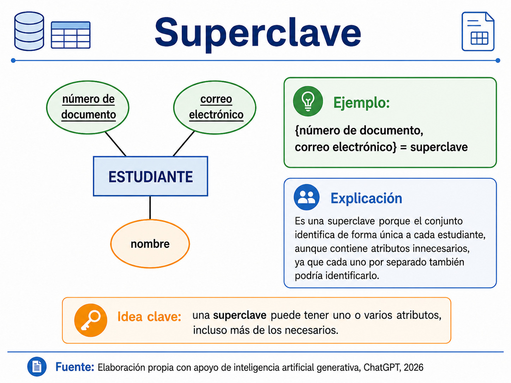

Aprendimos a identificar entidades, atributos y relaciones, y a representarlos gráficamente en un diagrama entidad-relación. Sin embargo, ese diagrama
todavía estaba incompleto, por ejemplo, que un ESTUDIANTE se relaciona con un CURSO a
través de la relación “se matricula en”, pero no habíamos precisado cuántos cursos puede tomar un mismo estudiante ni
cuántos estudiantes puede tener un mismo curso. Esa información cuántas ocurrencias de una entidad pueden asociarse con cuántas ocurrencias de otra es
precisamente lo que se conoce como cardinalidad.
Adicionalmente, hasta ahora hemos mencionado de forma general el concepto de “atributo clave”, sin profundizar en sus variantes. En este tema estudiaremos
con detalle los distintos tipos de claves (candidata, primaria, alterna y foránea) que permiten identificar de manera única cada registro de una entidad y
establecer relaciones confiables entre distintas entidades.
✨
Este tema es especialmente relevante porque la cardinalidad, las claves y las restricciones son exactamente los elementos que se traducirán de forma
directa en la estructura de las tablas del modelo relacional: la cardinalidad determinará cómo se distribuyen las llaves foráneas entre las tablas, y las
restricciones de integridad se implementarán mediante mecanismos propios del SGBD.
Objetivos de aprendizaje
🧠Interpretar la cardinalidad de una relación entre entidades y representarla correctamente en un diagrama entidad-relación.
🔍Diferenciar los tipos de claves que pueden identificar de forma única a una entidad (candidata, primaria, alterna y foránea).
📝Aplicar restricciones de integridad básicas (de dominio, de entidad y referencial) en el diseño conceptual de una base de datos.
🛠️Elaborar diagramas entidad-relación completos que integren entidades, atributos, relaciones, cardinalidad y claves.
Desarrollo del contenido
Cardinalidad de las relaciones
La cardinalidad de una relación indica el número de ocurrencias de una entidad que pueden (o deben) asociarse con el número de ocurrencias de
otra entidad participante en esa relación. En términos simples, responde a la pregunta: “¿con cuántos elementos de la otra entidad se puede
relacionar cada elemento de esta entidad?”. Determinar correctamente la cardinalidad es una de las decisiones de diseño más importantes del
modelo entidad-relación, ya que de ella depende directamente cómo se estructurarán las tablas y las llaves foráneas más adelante.
✨
Existen tres tipos básicos de cardinalidad para relaciones binarias (las más comunes en el diseño de bases de datos).
Cada ocurrencia de la entidad A se relaciona con, como máximo, una ocurrencia de la entidad B, y viceversa. Por ejemplo, un EMPLEADO puede tener asignada una única OFICINA, y esa oficina pertenece a un único empleado.
Cada ocurrencia de la entidad A puede relacionarse con varias ocurrencias de la entidad B, pero cada ocurrencia de B se relaciona con una sola ocurrencia de A. Por ejemplo, un DEPARTAMENTO puede tener muchos EMPLEADOS, pero cada empleado pertenece a un único departamento.
Varias ocurrencias de la entidad A pueden relacionarse con varias ocurrencias de la entidad B, y viceversa. Por ejemplo, un ESTUDIANTE puede matricularse en muchos CURSOS, y cada curso puede tener matriculados a muchos estudiantes.
✨ Ejemplo 1 práctico
Para cada uno de los siguientes pares de entidades, determinen y justifiquen cuál cardinalidad (1:1, 1:N o N:M) tendría la relación entre ellas:
(a) PAÍS y CAPITAL;
(b) AUTOR y LIBRO (considerando que un libro puede tener varios autores);
(c) PERSONA y CÉDULA DE CIUDADANÍA;
(d) CLIENTE y CUENTA BANCARIA (un cliente puede tener varias cuentas, pero cada cuenta pertenece a un único cliente).
Escriban su justificación en una frase por cada caso.
Cardinalidad mínima y máxima (participación)
Además de la cardinalidad máxima (1, N o M) que acabamos de estudiar, existe otro concepto
complementario llamado cardinalidad mínima o participación, que indica si la relación es
obligatoria o opcional para cada entidad. Se expresa generalmente como un par de números
(mínimo, máximo), por ejemplo (0,N) o (1,1).
Toda ocurrencia de la entidad debe participar necesariamente en la relación (cardinalidad mínima = 1). Por ejemplo, todo EMPLEADO debe estar asignado a un DEPARTAMENTO; no puede existir un empleado sin departamento.
Existen ocurrencias de la entidad que pueden no participar en la relación (cardinalidad mínima = 0). Por ejemplo, no todo CLIENTE ha realizado necesariamente un PEDIDO; puede estar registrado sin haber comprado nunca.
✨ Distinguir entre cardinalidad máxima y mínima es fundamental porque, cuando se traduce este modelo al modelo relacional, la participación total u opcional determinará si un campo de llave foránea debe aceptar o no valores nulos, decisión que tiene implicaciones directas sobre la integridad de los datos.
✨ Ejemplo
En una plataforma de streaming, un USUARIO puede crear varias listas de reproducción, pero
también puede existir un usuario recién registrado que todavía no ha creado ninguna. Por otro
lado, toda lista de reproducción debe pertenecer obligatoriamente a un usuario (no puede existir
una lista “huérfana”). Indica la cardinalidad máxima y mínima de esta relación desde ambos
lados (USUARIO hacía lista y lista hacía USUARIO), expresándose en formato (mínimo,
máximo).
CLAVE
Una clave (o llave) es uno o varios atributos cuyo valor permite identificar de manera única cada
ocurrencia de una entidad, es decir, distinguir un registro de todos los demás dentro del mismo
conjunto. Sin una clave bien definida, sería imposible garantizar que dos registros distintos no se
confundan entre sí, lo cual comprometería gravemente la integridad de toda la base de datos.
Existen varios tipos de claves, cada una con un rol específico.
Cualquier conjunto de uno o más atributos que, en conjunto, permite identificar de forma
única cada ocurrencia de una entidad (aunque contenga atributos innecesarios). Por ejemplo,
en la entidad ESTUDIANTE, el conjunto {número de documento, correo electrónico} es una
superclave, aunque cada uno de esos atributos, por separado, ya sería suficiente.

Es una superclave mínima, es decir, que no contiene atributos innecesarios si se elimina cualquier atributo de
una clave candidata, esta deja de identificar de forma única a la entidad. Una entidad puede tener varias claves
candidatas; por ejemplo, ESTUDIANTE podría tener como claves candidatas tanto el número de documento como el
correo institucional, ya que ambos identifican de forma única a cada estudiante por separado.
Es la clave candidata que se selecciona, entre todas las disponibles, para identificar oficialmente cada registro
de la entidad dentro del sistema. Debe cumplir con dos propiedades esenciales: Unicidad (no puede repetirse en dos
registros distintos) y No Nulidad (no puede quedar vacía en ningún registro).
Son las claves candidatas que no fueron seleccionadas como clave primaria, pero que igualmente podrían usarse para
identificar de forma única un registro. En el ejemplo anterior, si el número de documento se elige como clave primaria,
el correo institucional pasaría a ser una clave alterna.
Es un atributo (o conjunto de atributos) en una entidad que hace referencia a la clave primaria de otra entidad, con el propósito de
establecer y mantener la relación entre ambas. Por ejemplo, en la entidad MATRÍCULA, el atributo “código de estudiante” sería una
clave foránea que referencia la clave primaria de la entidad ESTUDIANTE.
✨ La correcta selección de la clave primaria es una decisión de diseño crítica. En muchos casos, se
recomienda utilizar un identificador artificial o sustituto, es decir, un valor generado
automáticamente por el sistema (como un número consecutivo o un identificador único universal,
UUID) en lugar de un atributo natural del negocio, ya que estos últimos pueden cambiar con el
tiempo (por ejemplo, un número de documento puede corregirse o un correo electrónico puede
modificarse), lo cual generaría inconsistencias si se hubiera usado como clave primaria.
RESTRICCIONES DE INTEGRIDADES
Las restricciones de integridad son reglas que el modelo de datos impone para garantizar que la información almacenada sea válida,
coherente y confiable a lo largo del tiempo, evitando estados inconsistentes que puedan afectar el correcto funcionamiento del sistema.
Establece que ningún atributo que forme parte de la clave primaria puede tener un valor nulo, ya que esto impediría
identificar de forma única al registro. Por ejemplo, no puede existir un ESTUDIANTE sin número de documento
si este es su clave primaria.
Establece que el valor de una clave foránea debe coincidir con un valor existente en la clave primaria de la entidad
referenciada, o bien ser nulo (si la relación lo permite). Esto evita, por ejemplo, que exista una MATRÍCULA que
haga referencia a un estudiante que no existe en la entidad ESTUDIANTE.
Establece que el valor de un atributo debe pertenecer a un conjunto específico de valores válidos (su dominio), ya sea por
tipo de dato (numérico, texto, fecha), por rango (por ejemplo, la nota final debe estar entre 0.0 y 5.0) o por una lista
cerrada de opciones (por ejemplo, el estado de un pedido sólo puede ser “pendiente”, “en proceso” o “entregado”).
Establece que el valor de un atributo determinado no puede repetirse entre distintos registros, aunque dicho atributo no
sea la clave primaria; por ejemplo, el correo electrónico de un usuario en un sistema de autenticación normalmente debe
ser único, incluso si la clave primaria es un identificador numérico autogenerado.
✨ Estas restricciones no son un simple formalismo teórico son la base sobre la cual el SGBD podrá, en etapas posteriores del curso,
rechazar automáticamente operaciones que pondrían en riesgo la calidad de los datos, como intentar eliminar un CLIENTE que todavía
tiene PEDIDOS asociados, o insertar una calificación de “7.5” en un sistema donde las notas van de 0.0 a 5.0.
Actividades prácticas
Sopa de Letras: Bases de Datos y SGBD
Arrastra el mouse sobre las letras (horizontal, vertical o diagonal) para encontrar las palabras.
Palabras a encontrar
Relaciona los Conceptos
Selecciona un concepto de la izquierda y luego su definición correcta a la derecha. Si aciertan, se conectan en verde; si no, se indicará que no coinciden.
Evaluación
Responde las 10 preguntas y presiona "Enviar respuestas" para ver tu retroalimentación.
Recursos para profundizar
Para ampliar tu conocimiento sobre ecuaciones y
desigualdades, te recomendamos explorar los siguientes enlaces y documentos: